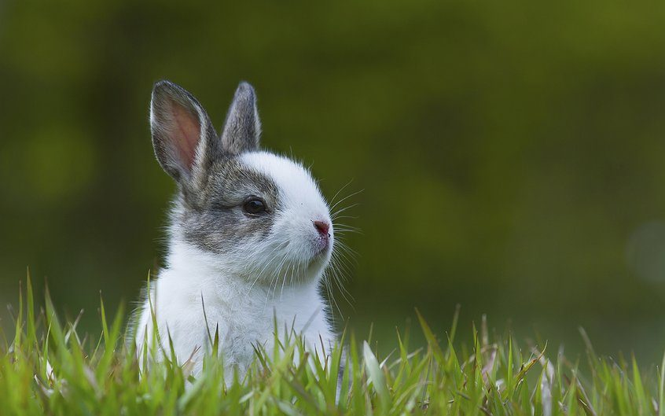

The Tale of Peter Rabbit
The Tale of Peter Rabbit was first publishet by Flederick Warme in 1902 and endures as beatrix Potters most popular and well-tale.

The Tale of Boris Bunny
Peter Rabbits cousin Boris Bunny has been a very popular character since this book´s first publication in 1904, what happens to them?

The Tale of Mr J.Fisher
This tale tells of an optimistic and slightly accident-prone frog who sets off on a fishing expedition have to go in search of across the pond

The Flopsy Bunnies
When the cupboard is bare at Flopsy Bunny´s burrow the family all have to go in search of have to go in search of food. They soon find some old lettuces